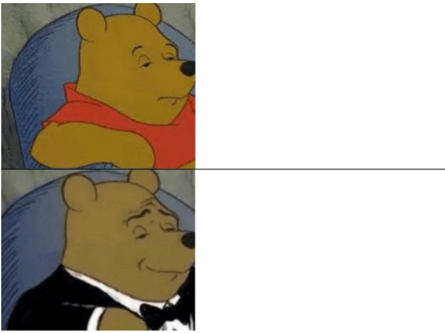

Une action monoïdale sur
la catégorie des cordes
Séminaire de maîtrise
25 novembre 2026
D'où vient un code-barres ?
Plan
- Motivation
- Préliminaires : actions de groupe, catégories, foncteurs
- Entrelacements et actions monoïdales
- L'ordre d'enroulement
- La catégorie des cordes $\X$
- Une action par rotation sur $\X$
Exemple : $2\pi\mathbb{Z}$ agit sur $\R$
Exemple : $\mathbb{Z}/8\mathbb{Z}$ agit sur un octogone
Pourquoi des catégories ?
Différents domaines ont des similitudes fondamentales
Théorie des groupes
Topologie
Algèbre linéaire
Qu'est-ce qu'une catégorie ?
Une catégorie $\mathcal{C}$ est la donnée de :
- (a) une classe $\operatorname{Ob}\mathcal{C}$, dont les éléments sont les objets de $\mathcal{C},$
- (b) pour chaque paire $(X, Y)$ d'objets, un ensemble $\Hom_{\mathcal{C}}(X, Y)$, dont les éléments sont les morphismes de $X$ vers $Y,$
- (c) pour chaque triplet $(X, Y, Z)$ d'objets, une application $\Hom_{\mathcal{C}}(X, Y) \times \Hom_{\mathcal{C}}(Y, Z) \to \Hom_{\mathcal{C}}(X, Z)$, ${(f, g) \mapsto g \circ f}$, la composition, telle que :
- (c1) ${h \circ (g \circ f) = (h \circ g) \circ f}$ pour ${f \in \Hom_{\mathcal{C}}(X, Y)}$, ${g \in \Hom_{\mathcal{C}}(Y, Z)}$, ${h \in \Hom_{\mathcal{C}}(Z, W)}$
- (c2) chaque objet $X$ a un morphisme ${\mathrm{Id}_X \in \Hom_{\mathcal{C}}(X, X)}$, l'identité de $X$, tel que ${f \circ \mathrm{Id}_X = f}$ et ${\mathrm{Id}_X \circ g = g}$ pour ${f \in \Hom_{\mathcal{C}}(X, Y)}$, ${g \in \Hom_{\mathcal{C}}(Z, X)}$
Une catégorie est une collection d'objets et de morphismes, où les morphismes se composent de façon associative et où chaque objet possède un morphisme identité.
Exemples de catégories
$\mathbf{Grp}$
$\mathbf{Top}$
$\mathbf{Vect}_{\kk}$
Objetsgroupes
espaces topologiques
$\kk$-espaces vectoriels
Morphismeshomomorphismes
fonctions continues
applications linéaires
Compositionusuelle : $(g \circ f)(x) = g(f(x))$
Identités$\mathrm{Id}_A(x) = x$, pour chaque objet $A$
Exemples de catégories
$(\R, \leqslant)$
Une catégorie « de l'ordre »
- Objets les nombres réels
- Morphismes une unique flèche $x \to y$ lorsque $x \leqslant y$, aucune sinon
- Composition $x \to y \to z$ donne $x \to z$, car $x \leqslant z$
- Identités $\mathrm{Id}_x\colon x \to x$, car $x \leqslant x$
Qu'est-ce qu'un foncteur ?
Soient $\mathcal{C}$ et $\mathcal{D}$ des catégories. Un foncteur $F\colon \mathcal{C} \to \mathcal{D}$ associe à chaque objet $X$ de $\mathcal{C}$ un objet $FX$ de $\mathcal{D}$, et à chaque morphisme $f\colon X \to Y$ de $\mathcal{C}$ un morphisme $Ff\colon FX \to FY$ de $\mathcal{D}$, tels que :
- (F1) si $g, f$ sont composables dans $\mathcal{C}$, alors $Fg, Ff$ le sont dans $\mathcal{D}$ et $F(gf) = (Fg)(Ff)$
- (F2) pour tout objet $X$ de $\mathcal{C}$, ${F(\mathrm{Id}_X) = \mathrm{Id}_{FX}}$
Un foncteur est une correspondance entre catégories qui envoie les objets sur des objets et les morphismes sur des morphismes, en préservant les compositions et les identités.
Exemple : un foncteur $(\R, \leqslant) \to \operatorname{vect}_{\kk}$
Morphismes de modules de persistance
Un module de persistance est un foncteur $M\colon (\R, \leqslant) \to \operatorname{vect}_{\kk}$, comme $\kk^{[a,b]}$. Un morphisme $\varphi\colon M \to N$ est une famille d'applications linéaires $(\varphi_x\colon M(x) \to N(x))_{x\in \mathbb{\R}}$ telle que pour $x \leqslant y$ ce carré commute :
Les modules de persistance et leurs morphismes forment une catégorie, notée $\mathcal{P}$.
${\Hom\bigl(\kk^{[a,b]}, \kk^{[c,d]}\bigr) = \kk \iff c \leqslant a \leqslant d \leqslant b}$, et $0$ sinon.
Décalages
Pour $t \geqslant 0$, le décalage de $\kk^I$ par $t$ est $\kk^I[t] = \kk^{I - t}$.
Entrelacements
Un $t$-entrelacement de $\kk^I$ et $\kk^J$ est une paire de morphismes ${\phi\colon \kk^I \to \kk^J[t],\ \psi\colon \kk^J \to \kk^I[t]}$ qui font commuter les diagrammes suivants.
La distance d'entrelacement est $$d(\kk^I, \kk^J) = \inf\{\, t \geqslant 0 \mid \kk^I \text{ et } \kk^J \text{ sont } t\text{-entrelacés} \,\}.$$
La distance d'entrelacement est $d(\kk^I, \kk^J) =$ « l'énergie minimale nécessaire pour aligner $I$ sur $J$ et $J$ sur $I$ ».
$[c,d]$ est aligné sur $[a,b]$ $\iff c \leqslant a \leqslant d \leqslant b \iff \Hom\bigl(\kk^{[a,b]}, \kk^{[c,d]}\bigr) \neq 0$
Catégories monoïdales strictes
Une catégorie monoïdale stricte est une catégorie $\mathcal{M}$ munie :
- (a) d'un objet $e$ et d'un produit $x \otimes y$ des objets
- (b) d'un produit des morphismes : pour $f\colon x \to y$ et $f'\colon x' \to y'$, un morphisme ${f \otimes f'\colon x \otimes x' \to y \otimes y'}$
tels que :
- (M1) $(a \otimes b) \otimes c = a \otimes (b \otimes c)$ et $e \otimes a = a = a \otimes e$, pour les objets comme pour les morphismes
- (M2) ${(g \circ f) \otimes (g' \circ f') = (g \otimes g') \circ (f \otimes f')}$ et ${\mathrm{Id}_x \otimes \mathrm{Id}_y = \mathrm{Id}_{x \otimes y}}$
Une catégorie monoïdale stricte est une catégorie où on multiplie des objets et des flèches, de façon associative et avec une unité, en gardant la compatibilité avec la composition.
Des actions de groupe aux actions monoïdales
$\rho\colon G \longrightarrow \operatorname{Bij}(X)$
un homomorphisme de groupes
$\rho_{gh} = \rho_g \circ \rho_h, \quad \rho_e = \mathrm{Id}$
$T\colon \mathcal{M} \longrightarrow \operatorname{End}(\mathcal{C})$
un foncteur monoïdal
$T_{x \otimes y} = T_x \circ T_y, \quad T_e = \mathrm{Id}$
La paire $(\mathcal{C}, T)$ s'appelle une actégorie.

Action de groupe
$G \longrightarrow \operatorname{Bij}(X)$
Action monoïdale
$\mathcal{M} \longrightarrow \operatorname{End}(\mathcal{C})$
Enrouler la droite sur le cercle
Enrouler la droite sur le cercle
Bijections admissibles
La composition
- Objets : les sous-ensembles à deux éléments de $S^1$, appelés cordes.
- Morphismes : pour deux cordes $A$ et $B$, on définit $\Hom(A,B)$ comme le $\kk$-espace vectoriel de base $\operatorname{Adm}(A,B)$. Le morphisme identité de $A$ est la bijection admissible $\operatorname{Id}_A$.
- Composition : pour deux morphismes de base $f \in \operatorname{Adm}(A,B)$ et $g \in \operatorname{Adm}(B,C)$, on pose $$g \circ f = \begin{cases} gf & \text{si } gf \in \operatorname{Adm}(A,C), \\ 0 & \text{sinon.} \end{cases}$$ On étend $\circ$ par bilinéarité.
Le produit de deux flèches de $WS^1$
Rotation d'une corde
$\tau_r(A) = A + r, \qquad \tau_{r + s} = \tau_r \circ \tau_s, \qquad \tau_0 = \mathrm{Id}$
L'action d'une flèche : $\tau(r \to s)$
La distance d'entrelacement sur le cercle
Soient $A, B$ deux cordes et $g, h \in S^1$. $A$ et $B$ sont $(g, h)$-entrelacées s'il existe ${\varphi\colon A \to \tau_g(B)}$ et ${\psi\colon B \to \tau_h(A)}$ dans $\X$, et des flèches ${\alpha\colon 0 \to g + h}$ et ${\beta\colon 0 \to h + g}$ dans $WS^1$, telles que ces triangles commutent :
$\tau(\alpha)_A$ est le glissement de $A$ par $g + h$.
La distance d'entrelacement est $$d_\tau(A, B) = \inf\{\, \max\{w(g), w(h)\} \mid A \text{ et } B \text{ sont } (g, h)\text{-entrelacées} \,\},$$ où $w(g) \in [0, 2\pi)$ est l'unique représentant de $g$ dans $[0, 2\pi)$.
Sur $\R$ : le décalage $[t]$ joue le rôle de $\tau_g$, et la flèche $0 \leqslant 2t$ celui de $\alpha$.
Pourquoi pas simplement le groupe $S^1$ ?
$A = \{0, \pi/2\}$, et $B = \{\pi/4, \pi/2\}$ :
$B$, c'est $A$ avec une extrémité glissée de $\pi/4$.
Seules flèches : les identités. Donc $\alpha = \mathrm{Id}$, et le triangle donne ${\tau_g(\psi) \circ \varphi = \mathrm{Id}_A}$. Par le Fait II, ${\tau_g(B) = A}$ : impossible, une rotation garde la longueur.
$d(A, B) = \infty$
${\alpha = \beta = (0 \to \pi/4)} \neq 0$, avec ${\varphi\colon A \to B}$ $(0 \mapsto \pi/4)$ et ${\psi\colon B \to A + \pi/4}$ $(\pi/2 \mapsto 3\pi/4)$ : les deux triangles commutent.
$A$ et $B$ sont $(0, \pi/4)$-entrelacées : $d(A, B) \leqslant \pi/4$
$B$ est presque $A$… et pourtant, pour le groupe, elles sont infiniment loin.
En résumé
Sur le cercle, les rotations seules ne suffisent pas pour comparer des cordes ; il faut des flèches entre les rotations, et c'est ce que fournit une catégorie monoïdale.
Connu
Nouveau
objets
intervalles de $\R$
cordes de $S^1$
ce qui agit
$(\R_{\geqslant 0}, \leqslant, +)$
$WS^1$
l'action
décalage
rotation
la distance
formule connue
en cours